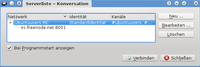
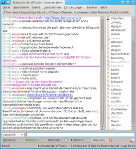
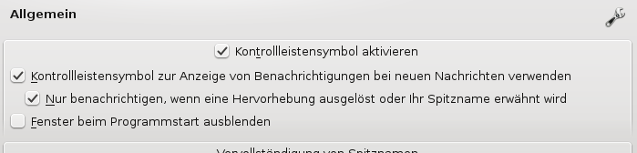
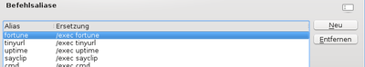

Konversation
Dieser Artikel wurde für die folgenden Ubuntu-Versionen getestet:
Ubuntu 16.04 Xenial Xerus
Ubuntu 14.04 Trusty Tahr
Zum Verständnis dieses Artikels sind folgende Seiten hilfreich:
Hinweis:
Diese Anleitung ist für das KDE-Programm Konversation geschrieben. Eine IRC-Einführung findet sich hier.
Die KDE-Antwort auf XChat und Co. heißt eindeutig Konversation. Der IRC  (Internet Relay Chat) Client aus dem Hause KDE unterstützt eine Vielzahl von Modulen und Sonderfunktionen. Mit Konversation können viele IRC-Befehle auch grafisch eingegeben werden.
(Internet Relay Chat) Client aus dem Hause KDE unterstützt eine Vielzahl von Modulen und Sonderfunktionen. Mit Konversation können viele IRC-Befehle auch grafisch eingegeben werden.
Das Wort "Konversation" leitet sich ab von "Gespräch" oder "Diskussion".
Allerdings soll diese Anleitung weder ein komplettes Handbuch, noch eine IRC-Einführung sein.
Installation¶
Unter Kubuntu ist Konversation standardmäßig installiert. Wenn man GNOME nutzt oder Ubuntu mit nachinstalliertem KDE, benötigt man folgendes Paket [1]:
konversation
 mit apturl
mit apturl
Paketliste zum Kopieren:
sudo apt-get install konversation
sudo aptitude install konversation
Start von Konversation¶
Konversation kann aus dem K-Menü im Punkt "Internet" gestartet werden. Alternativ ist es auch über den Befehl konversation ausführbar.
Nach dem Start öffnet sich (wenn nicht anders konfiguriert) das Serverfenster. Im Abschnitt "Einrichten" wird direkt darauf eingegangen. Für den späteren Gebrauch ist es sinnvoller, die Option für das automatische Starten des Serverfensters abzustellen.

Einrichten¶
Im Serverfenster befindet sich bereits ein Profil, dieses kann über den "Bearbeiten.."-Button angepasst werden.
Unten links sind die zu betretenden Server und rechts die Channel aufgelistet. Hier können Channel beliebig entfernt oder hinzugefügt werden. Diese werden beim Start von Konversation und Auswahl des Profiles automatisch betreten. So können z.B. Profile wie Clans & Friends oder Linux Hilfe erstellt werden.
Die Felder Netzwerk oder Gruppe sind lediglich einfache Kommentare, die nicht weiter wichtig sind.
Die Identität lässt sich noch einmal neben den Profilen variabel verändern. So ist optimale Flexibilität gewährleistet.
Das Feld Kommandos ist schon etwas sinnvoller. Hier kann z.B.
/msg NickServ IDENTIFY <passwort>
eingegeben werden, damit der Server direkt beim Start authentifiziert.
Das Kontrollkästchen "Beim Programmstart verbinden" ist eine der wichtigsten Punkte an diesem Dialog. Wenn der Haken aktiviert wird und das Serverlisten-Fenster beim Start deaktiviert ist, kann Konversation selbständig in sämtliche Channel joinen wenn der Computer startet.

Benutzung¶
Konversation arbeitet mit Tabs. Hier gut zu sehen, lassen diese sich ähnlich wie beim Konqueror steuern.
Im Chat werden, wenn nicht anders konfiguriert, private Nachrichten als weiterer Tab angelegt. Nachrichten mit dem eigenen Nickname werden rot hinterlegt und können im Systemabschnitt der Kontrollleiste angezeigt werden.
Nachrichten werden über die untere Leiste eingegeben. Farben, Merklinien und Sonderzeichen können im Menü "Einfügen" definiert werden.
Status Einstellen¶
Wenn man zur Zeit nicht gestört werden will oder gerade afk (away from keyboard) ist, kann man mit dem Befehl
/away <grund-optional>
seinen Nick als abwesend markieren. Um wieder als Online zu gelten, reicht es den Befehl ohne anschließenden Parameter zu wiederhohlen, also:
/away
Umbenennen¶
Wenn man in einem Channel anders heißen will, als im Profil angegeben, kann man den Nick mit
/nick <name>
ändern. Außerdem ist es möglich, direkt den Nick in dem Feld links neben dem Namen anzugeben.
Systray richtig nutzen¶
Der Systray von Konversation ist sehr mächtig. Er kann bei jedem beliebigem Wort eine Message anzeigen oder anfangen zu blinken.
Wird zum Beispiel das Wort KDE in einem Channel erwähnt, wird sofort eine Nachricht angezeigt.
Auch kann ein OSD (on screen display) wie bei Amarok angezeigt werden.
Das ganze kann auch für den eigenen Nick verwendet werden oder wenn jemand den Channel betritt. Einstellungen dazu finden sich unter "Einstellungen -> Verhalten Allgemein" und "OnScreen Anzeige".

Sonderfunktionen¶
Unter Konversation gibt es eine Reihe von Skripten und Sonderfunktionen. Konverstaion liefert von Haus aus einige Skripte mit. Diese sind im Verzeichnis /usr/share/kde4/apps/konversation/scripts zu finden.
Uptime¶
Mit dem Skript Uptime, welches in Konversation bereits vorhanden ist, lässt sich die Online Zeit anzeigen:
/uptime
Welche Musik läuft?¶
Mit einem weiteren Skript Media wird im Chat einmalig ausgegeben, welches Musikstück in dem aktuellen Media Player läuft, z.B. in Amarok oder Kaffeine.
/media
KDE-Version¶
Mit einem einfachen Skript KDE Version ist es möglich QT-Version, KDE-Version und KDE-Config-Version auszugeben.
/kdeversion
Systemdaten¶
Mit dem Skript SysInfo werden Kernel-Daten, Uptime, Computer-Name, Speicherplatz auf Datenträgern, Prozesse und weitere Hardware-Daten angezeigt.
/sysinfo
Ungelesene E-Mails?¶
Mit dem Skript Mail wird direkt angezeigt, ob sich gerade ungelesene E-Mails in der Inbox befinden.
Hinweis:
Es kann leider Probleme mit dem Ordner Inbox geben; wenn ein deutsches System keine "Inbox" enthält, muss das Skript abgeändert werden.
KDE-Bugs anzeigen¶
Mit Bug wird einfach ein neues Konqueror-Fenster geöffnet, welches den Bug anzeigt, dessen ID angegeben wurde:
/bug <bugnummer>
Eigene Konversation-Skripte erstellen¶
Das Erstellen eigener Skripte zur Ausgabe von Systeminformationen ist ganz einfach. Zuerst muss man einen Editor öffnen [2]. Hier habe ich ein kleines Beispiel-Skript geschrieben, es gibt einfach den Satz "Konversation ist einfach genial!" in grün aus.
#!/bin/sh DAT=$1; SERVER=$2; TARGET=$3; echo "%C9 Konversation ist einfach genial!" | while read line; do dcop $DAT Konversation say $SERVER "$TARGET" "$line"; done
Kurze Erklärung:
DAT: Enthält den Port, mit dem Konversation verbunden ist.
SERVER: Enthält den Server, mit dem Konversation verbunden ist.
TARGET: Ist der aktuelle Channel.
Dieses Skript muss ausführbar gemacht und an den Ort /usr/share/kde4/apps/konversation/scripts kopiert werden.
Im Chat kann es mit
/exec <dateiname>
ausgeführt werden.
Skripte sind flexibel¶
Das Skript von oben z.B. ist ein Bash Skript. Hier kann man an dem Punkt:
<ausführen> | while read line; do dcop $DAT Konversation say $SERVER "$TARGET" "$line"; done
weitere Befehle einsetzen. Da diese mit read line ausgegeben werden, kann man also auch hier kreativ sein.
Weitere Skript-Beispiele¶
Wie oben erläutert, lassen sich also beliebige Bash Befehle ausführen. Das macht kreativ. Dieses Skript gibt ein Zufalls-Zitat mittels fortune aus.
#!/bin/sh DAT=$1; SERVER=$2; TARGET=$3; fortune | while read line; do dcop $DAT Konversation say $SERVER "$TARGET" "$line"; done
Folgendes Skript ermittelt die Version von Konversation
#!/bin/sh DAT=$1; SERVER=$2; TARGET=$3; konversation --version | while read line; do dcop $DAT Konversation say $SERVER "$TARGET" "$line"; done
Aliase¶
Um einen Befehl nicht immer mit
/exec <befehlsname>
ausführen zu müssen, kann man in den "Einstellungen -> Befehlsaliase" eine neue Abkürzung definieren.

So wird z.B. aus
/exec zufalls_spruch
nach dem Aliassen
/spruch

- Erstellt mit Inyoka
-
 2004 – 2017 ubuntuusers.de • Einige Rechte vorbehalten
2004 – 2017 ubuntuusers.de • Einige Rechte vorbehalten
Lizenz • Kontakt • Datenschutz • Impressum • Serverstatus -
Serverhousing gespendet von